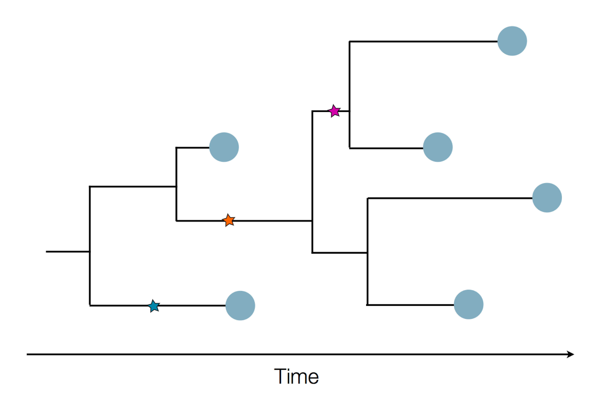

Phylodynamics introduction
Trevor Bedford (@trvrb)
May 26, 2020
GS541 Introduction to Computational Molecular Biology
Significant fog of war. Genomic approaches offer orthogonal data source to understand the pandemic.
Sequence and determine phylogeny
Sequence and determine phylogeny

Nextstrain
Project to conduct real-time molecular epidemiology and evolutionary analysis of emerging epidemics
Nextstrain architecture
All code open source at github.com/nextstrain
Two central aims: (1) rapid and flexible phylodynamic analysis and
(2) interactive visualization
Rapid build pipeline for 3000 SARS-CoV-2 genomes (timings are for a laptop)
- Align with MAFFT (~20 min)
- Build ML tree with IQTREE (~40 min)
- Temporally resolve tree and geographic ancestry with TreeTime (~50 min)
- Total pipeline (~2 hr)
Flexible pipelines constructed through command line modules
- Modules called via
augur filter, augur tree, augur traits, etc...
- Designed to be composable across pathogen builds
- Defined pipeline, making steps obvious
- Provides dependency graph for fast recomputation
- Pathogen-specific repos give users an obvious foundation to build from
- SARS-CoV-2 workflow here
Current data flow for SARS-CoV-2
- Labs contribute directly to GISAID (now have >17k full genomes)
- Nextstrain pulls a complete dataset from GISAID every 60 minutes
- This triggers an automatic rebuild on Amazon Web Services
- We manually update new lat/longs, etc...
- We push this build online to nextstrain.org and tweet the update from @nextstrain
We do about one update per 12 hours via Seattle and Basel.
We were regularly getting 200k visitors per day to the site, now down to 50k.
Dec/Jan: Emergence of SARS-CoV-2 from Wuhan in ~Nov 2019
Jan/Feb: Spread within China and seeding elsewhere
Feb/Mar: Epidemic spread within North America and Europe
Mar/Apr: Continued growth, but decreasing transmission with social distancing measures
Epidemic in the USA was introduced from China in late Jan and from Europe during Feb
Once in the US, virus spread rapidly
Single introduction ~Feb 1 quickly shows up throughout the country
States show different patterns
States show different patterns
States show different patterns
States show different patterns
States show different patterns
States show different patterns
Generally, phylodynamic inference allows us to:
- Infer changes in population size, ie prevalence, through time
- Infer spatial movements of the epidemic and patterns of seeding
- Infer differences in transmission rates between genetic variants
- Support contact tracing investigations